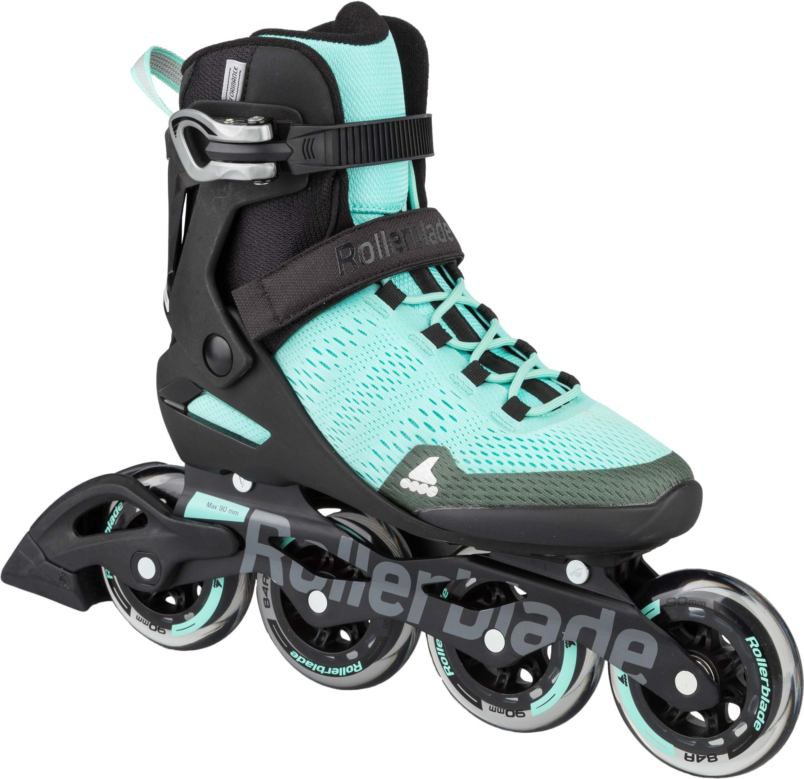
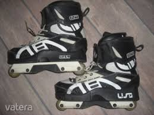
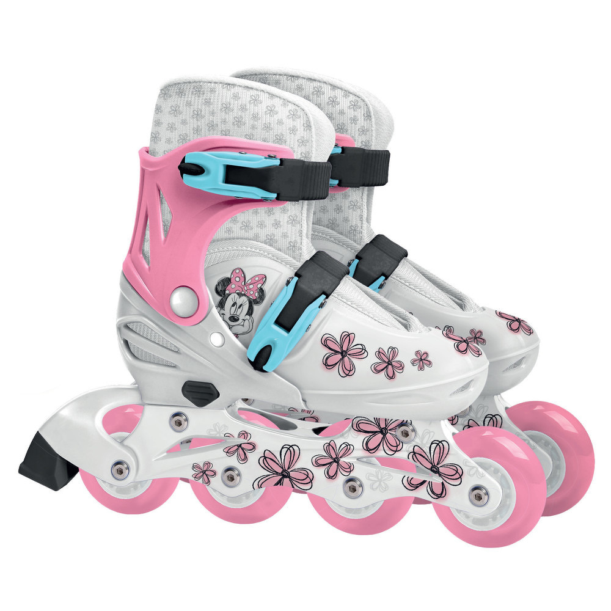
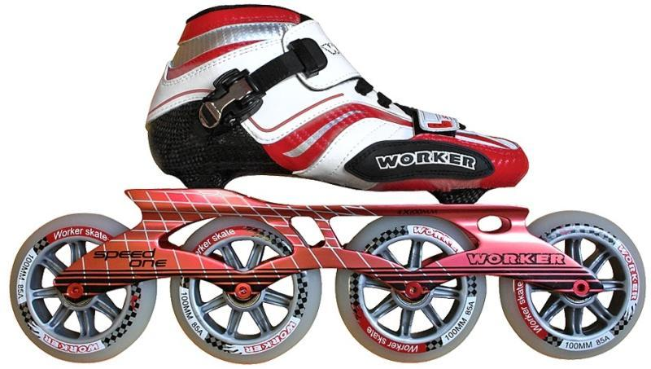
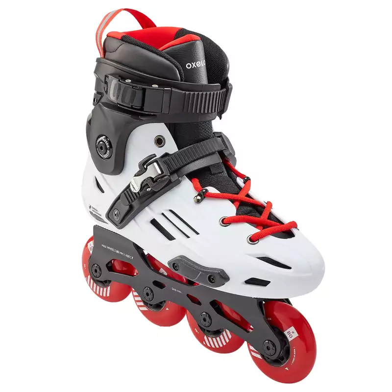
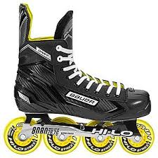
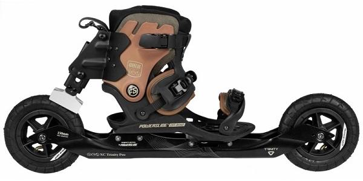

Görkorcsolya típusok
| Fitnesz görkorcsolya | Agresszív görkorcsolya | Gyerek görkorcsolya | Speed görkorcsolya |
|---|---|---|---|
| Ez a legelterjedtebb típus a rekreációs és sport görkorcsolyázásban. | Az agresszív görkorcsolyák kicsi és kemény kerekekkel vannak ellátva (50-60mm), héjuk felülete speciális műanyag. | A gyerek görkorcsolyák elsősorban állítható méretükkel (32-35) emelkednek ki. Általában kisebb és puhább kerekekkel rendelkeznek. | Speciális, gyors, verseny görkorcsolya. Kezdők számára határozottan nem alkalmas. A hosszú váz nehezebbé teszi az irányíthatóságot. Az alacsony szárú cipő nem rögzíti tökéletesen a bokát. |
|  |  |  |  |
| Freestyle görkorcsolya | Hoki görkorcsolya | Off-road görkorcsolya | Kétsoros |
|---|---|---|---|
| Ez a típus freestyle slalomra (szlalom trükkökkel) és művészi görkorcsolyázásra alkalmas. | Ez a típusú görkorcsolya elsősorban jégkorongozóknak ajánlott. | Speciális típus, mely burkolt felületen kívüli görkorcsolyázásra, ún. nord skating-re alkalmas. | Lassabb, mint az egysoros kori, viszont kezdők számára egyszerűbb lehet ezzel trükköket tanulni. |
|  |  |  |

|